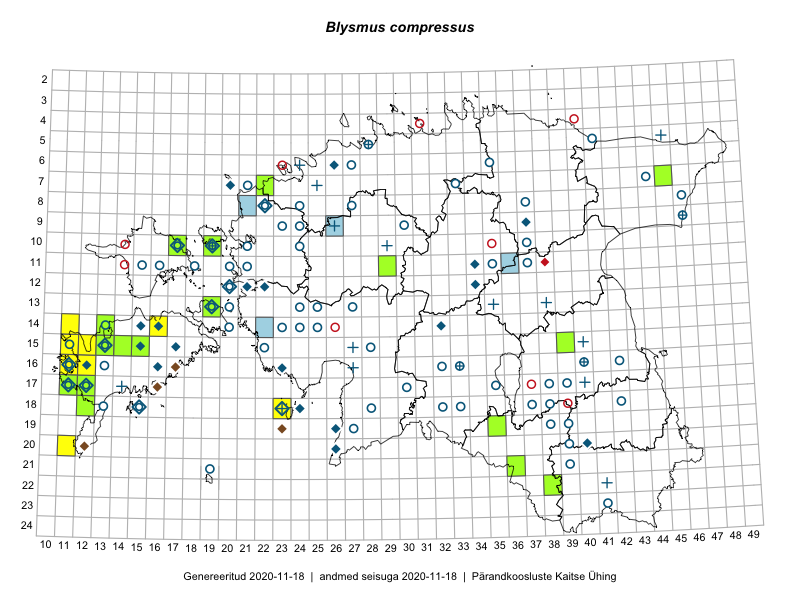

Blysmus compressus
Uuendatud: 2016-12-08
Kaardile koondatud taksonid: Blysmus compressus (L.) Panz. ex Link

Kaart põhineb 15 vaatlusel. Taime on leitud 8 ruudust.
| Ruut | Vaatleja(d) | Vaatlusaeg | Kirje tüüp | Viide andmebaasikirjele |
|---|---|---|---|---|
| 22-38 | Eeva-Maria Jeletsky, Tarmo Niitla | 2015-07-17 | ruut/ala | vaata PlutoFis |
| 14-13 | Mari Reitalu, Triin Reitalu | 2015-08-14 | ruut/ala | vaata PlutoFis |
| 14-13 | Mari Reitalu, Triin Reitalu | 2015-08-14 | punkt | vaata PlutoFis |
| 20-11 | Mari Reitalu, Triin Reitalu | 2014-08-15 | ruut/ala | vaata PlutoFis |
| 17-12 | Mari Reitalu | 2015-08-11 | ruut/ala | vaata PlutoFis |
| 17-12 | Mari Reitalu | 2015-08-11 | punkt | vaata PlutoFis |
| 14-11 | Mari Reitalu, Oliver Parrest | 2015-07-14 | ruut/ala | vaata PlutoFis |
| 14-13 | Mari Reitalu, Oliver Parrest | 2015-07-21 | ruut/ala | vaata PlutoFis |
| 18-12 | Mari Reitalu, Sirje Azarov, Oliver Parrest | 2015-08-02 | ruut/ala | vaata PlutoFis |
| 15-11 | Mari Reitalu, Oliver Parrest | 2015-07-16 | ruut/ala | vaata PlutoFis |
| 18-12 | Oliver Parrest, Mari Reitalu, Sirje Azarov | 2015-08-02 | punkt | vaata PlutoFis |
| 15-11 | Oliver Parrest, Mari Reitalu | 2015-07-16 | punkt | vaata PlutoFis |
| 07-22 | Mari Reitalu, Eerik Leibak | 2016-07-07 | ruut/ala | vaata PlutoFis |
| 07-22 | Mari Reitalu, Triin Reitalu, Sirje Azarov | 2016-07-08 | punkt | vaata PlutoFis |
| 14-13 | Toomas Kukk, Meeli Mesipuu, Mari Reitalu | 2016-10-06 | ruut/ala | vaata PlutoFis |